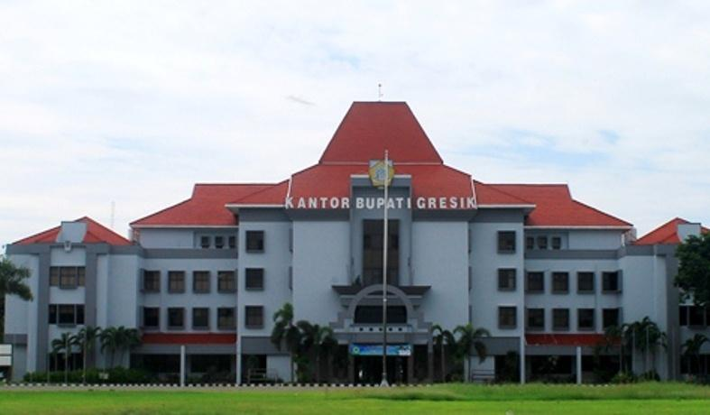
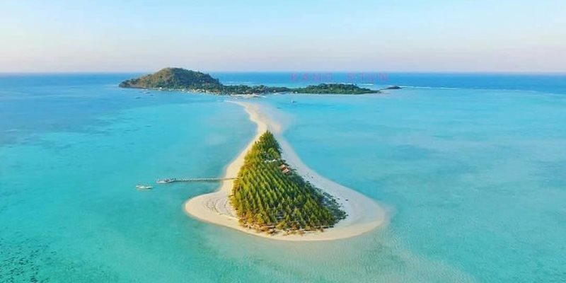
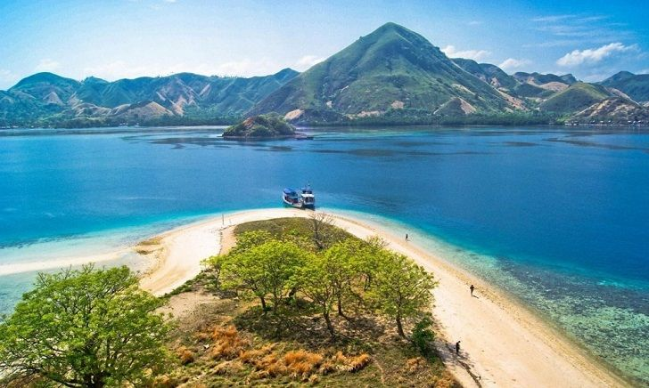

Sejarah

Kota Gresik merupakan salah satu kota tertua di Indonesia yang memiliki sejarah panjang sejak era Kerajaan Majapahit. Gresik dikenal sebagai pintu gerbang masuknya Islam di Jawa, dengan hadirnya Sunan Giri dan Syekh Maulana Malik Ibrahim sebagai penyebar agama Islam pada abad ke-14 dan 15.
Sebagai kota pelabuhan, Gresik menjadi pusat perdagangan yang ramai sejak zaman Kerajaan Singasari dan Majapahit, menjalin hubungan dagang dengan pedagang dari Tiongkok, Arab, dan India. Pada masa kolonial, Gresik berkembang sebagai pusat industri, terutama dalam sektor semen dan perkapalan. Hingga kini, Gresik tetap dikenal sebagai kota industri, religi, dan sejarah yang memiliki warisan budaya kuat serta peran penting dalam perkembangan Jawa Timur.
Geografis

Kota Gresik terletak di Provinsi Jawa Timur, Indonesia, di bagian utara Pulau Jawa. Secara geografis, Gresik berbatasan dengan:
-
Utara: Laut Jawa
-
Timur: Kota Surabaya dan Selat Madura
-
Selatan: Kabupaten Sidoarjo dan Kabupaten Mojokerto
-
Barat: Kabupaten Lamongan
Luas wilayahnya sekitar 1.191 km², dengan kondisi topografi yang sebagian besar berupa dataran rendah di pesisir utara dan perbukitan kapur di bagian selatan dan barat, terutama di wilayah Pegunungan Kapur Utara. Kota ini memiliki beberapa sungai penting, seperti Sungai Bengawan Solo yang melintasi bagian barat wilayahnya.
Gresik juga memiliki sejumlah pulau kecil, termasuk Pulau Bawean, yang terkenal dengan keindahan alamnya dan fauna endemik seperti Rusa Bawean. Dengan iklim tropis, Gresik mengalami musim hujan dan kemarau yang cukup jelas, mendukung sektor industri, pertanian, dan perikanan di wilayahnya.
Wisata
Gresik memiliki beragam destinasi wisata, mulai dari wisata religi, alam, hingga sejarah. Berikut beberapa tempat wisata populer di Gresik:
Makam Sunan Giri
Makam Sunan Giri adalah salah satu situs ziarah penting di Gresik, Jawa Timur. Sunan Giri, atau Raden Paku, adalah salah satu Wali Songo yang berperan besar dalam penyebaran Islam di Jawa pada abad ke-15. Makam Sunan Giri terletak di Desa Giri, Kecamatan Kebomas, Gresik, di atas sebuah bukit yang dikenal sebagai Bukit Giri.
Pulau Bawean

Pulau Bawean adalah sebuah pulau eksotis di Laut Jawa yang secara administratif termasuk dalam Kabupaten Gresik, Jawa Timur. Pulau ini terletak sekitar 120 km dari utara Gresik dan dikenal dengan keindahan alamnya serta fauna endemik, Rusa Bawean (Axis kuhlii). Pulau Bawean adalah destinasi wisata yang menawarkan keindahan alam, kekayaan budaya, serta ekosistem unik. Cocok bagi wisatawan yang mencari pengalaman berlibur yang tenang dan jauh dari keramaian.